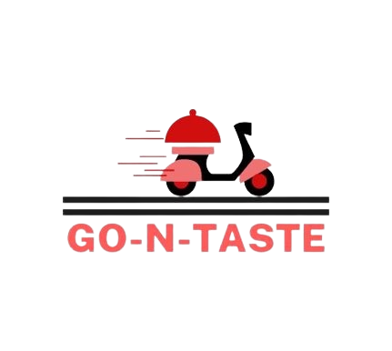

WE ARE NOW LOOKING FOR
Three (3) Delivery Rider ( Brgy. Kasiglahan, Brgy. San Isidro, Brgy. San Jose, Brgy. Burgos, Brgy. San Rafael )
- • Education - High School degree
- • Experience - Good driving record
- • Training - None required
- • Requirements - Valid driver license
IT Technician
- • Education - Degree in Computer Science, engineering or relevant field
- • Experience - Proven experience as IT Technician or relevant position
- • Training - Excellent written and verbal communication skills
- •Requirements - Proficient in database programming and software installation
Service delivery manager
- • Education - A bachelor's degree in a business-related field
- • Experience - IT Service Management and Service Delivery
- • Training - customer service, leadership, and logistics may be advantageous.
- • Requirements - 2 years of relevant professional experience
Customer Service Representative
- • Education - High school diploma or equivalent; college degree preferred
- • Experience - Proven call center or customer service experience preferred
- • Training - Attentiveness and patience for customers
- • Requirements - Great computer Navigation & Typing skills 35 wpm
Field account specialist
- • Education - Associate’s or bachelor’s degree in business or related field a plus.
- • Experience - Sales tracking software and Previous office or business experience.
- • Training - Willingness to work in a competitive environment
- •Requirements - Basic computer skills